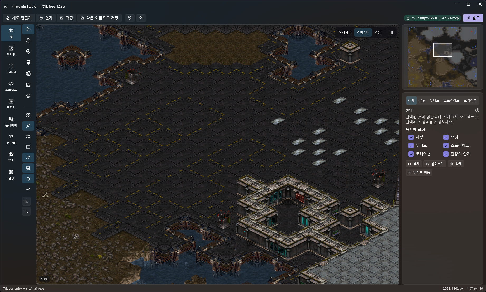
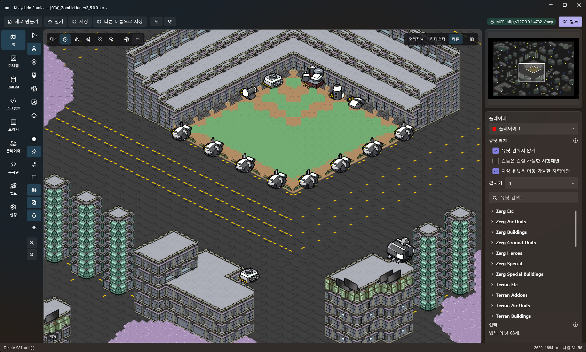
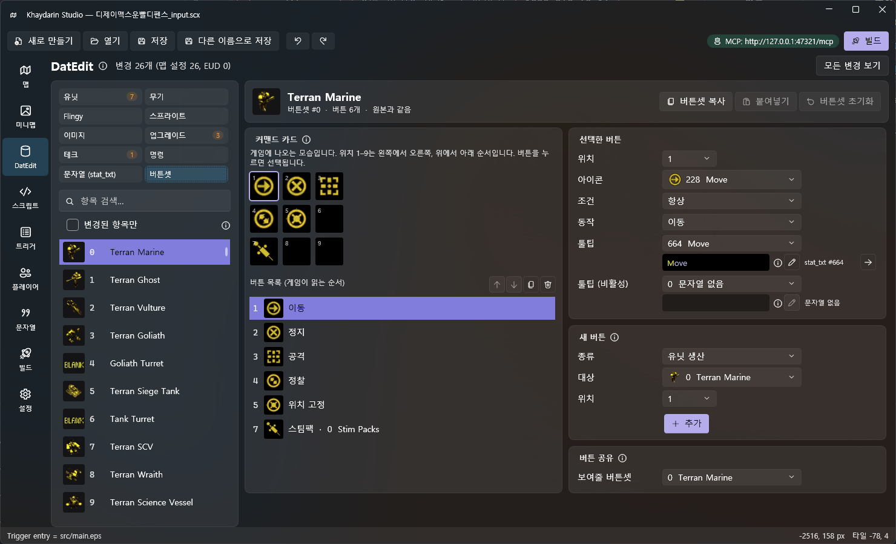

맵 편집
리마스터 그래픽을 그대로 보며 ISOM 지형, 유닛·두데드·로케이션, 대칭 배치, 텍스트 트리거까지 편집해요.
맵 편집 기능 보기스타크래프트 맵 제작을 위한 에디터
지형을 칠하고 유닛을 놓는 일부터 DAT 편집, EUD 빌드까지.
이제 프로그램을 오가지 않고 한 창에서 끝내세요.

Khaydarin Studio는 맵 에디터 ScmDraft 2와 데이터·EUD 에디터 EUD Editor를 하나로 합쳤어요.
맵 · 데이터 · AI 세 가지 작업이 같은 프로젝트 안에서 자연스럽게 이어집니다.
리마스터 그래픽을 그대로 보며 ISOM 지형, 유닛·두데드·로케이션, 대칭 배치, 텍스트 트리거까지 편집해요.
맵 편집 기능 보기units · weapons · upgrades 같은 DAT와 요구 조건, 게임 문자열, 버튼셋을 고치고 EUD 맵으로 바로 빌드해요.
데이터 편집 기능 보기MCP 서버를 내장해 Claude 같은 AI가 에디터를 직접 다뤄요. 결과는 화면에 바로 보이고 Ctrl+Z로 되돌릴 수 있어요.
AI 연동 알아보기리마스터 데이터(CASC)를 직접 읽어 지형·유닛·건물·스프라이트를 게임처럼 그려요.
SD · HD · Cartoon 스타일을 버튼 하나로 바꾸고, idle 애니메이션과 그림자까지 재생합니다.

Original(SD) / Remastered(HD) / Cartoon을 전환하고, iscript 기반 애니메이션과 그림자를 게임처럼 재생해요.
StarEdit·ScmDraft와 같은 등각 알고리즘으로 경계·절벽·물가가 자동으로 이어져요. 사각형·타일 인덱스 모드도 지원해요.
좌우 · 상하 · 4방향 · 점대칭으로 지형과 유닛을 한 번에 배치하고, 대칭 중심을 원하는 곳에 둘 수 있어요.
유닛 겹침, 건설 가능 지형, 이동 가능 지형을 미리 보여 주고 막힌 자리는 건너뛰어요. 끌면서 연속 배치도 돼요.
유닛·두데드·스프라이트·로케이션과 지형·전장의 안개를 함께 복사해 다른 맵에도 붙여 넣어요.
이미지를 고르면 게임 미니맵(SD 128px / HD 256·512px)에 그 그림이 보이도록 지형을 만들어 줘요.
로케이션마다 색을 입히고 그룹으로 묶어 숨기거나 잠가서, 복잡한 맵도 깔끔하게 관리해요.
ScmDraft Text Trigedit과 호환되는 문법을 구문 강조 편집기에서 쓰고, 오류 줄을 바로 확인해요.
유닛 데이터부터 요구 조건, 게임 문자열, 버튼셋까지.
EUD Editor와 같은 탭·상자 구성이라 익숙하게 바로 쓸 수 있어요.

units / weapons / flingy / sprites / images / upgrades / techdata / orders를 편집해요. 원본과 달라진 값은 눈에 띄게 표시되고, 필드·탭·항목 단위로 되돌리거나 복사할 수 있어요.
생산·연구·사용·명령 조건을 목록으로 편집하고, 남은 용량을 실시간으로 보여 줘요.
영문 / 한국어 음역 / 한국어 완역 원본을 함께 보며 유닛 이름·툴팁·오류 메시지를 고쳐요.
커맨드 카드 250개를 게임과 같은 3×3 배치로 보면서 위치·아이콘·조건·동작·툴팁을 편집해요.
유닛 모습과 충돌 크기, iscript 재생, 무기의 발사체·사거리·스플래시 범위를 그림으로 확인해요.
데이터를 고칠 때마다 어디에 어떻게 저장할지 고민할 필요 없어요.
바뀐 값은 가능하면 EUD 없이 적용되는 맵 설정에, 그렇지 않으면 EUD로 나뉘어 저장돼요.
EUD 값은 빌드할 때 euddraft 플러그인으로 만들어지므로, 따로 스크립트를 쓰지 않아도 그대로 게임에 적용됩니다.
UNIx · UPGx · TECx
EUD 없이 적용, 실행 취소 가능
빌드할 때 euddraft 플러그인으로 생성
스크립트 작성 필요 없음
에디터 전용 정보는 맵 옆의
JSON 파일 .khproj에 보관
Claude 같은 AI 클라이언트를 연결하면 요청을 에디터가 그대로 실행해요. 결과가 화면에 바로 나타나고, 마음에 들지 않으면 Ctrl+Z로 되돌리면 됩니다.
?tools=units,triggers)claude mcp add --transport http ks http://127.0.0.1:47321/mcp
paint_terrain지형 정리place_units해처리 · 드론 · 오버로드create_locationZerg Baseadd_triggers시작 트리거최신 릴리즈를 내려받아 압축을 풀고 실행하세요.
게임 데이터는 설치된 StarCraft: Remastered에서 자동으로 찾아요.
Windows 10 / 11 (64비트)
게임 데이터를 설치 폴더에서 직접 읽어요. 위치는 레지스트리에서 자동으로 찾아요.
EUD 맵을 빌드할 때만 필요해요. 경로는 Settings 화면에서 지정해요.
스크립트 편집기의 자동 완성·호버 같은 언어 서버 기능에 쓰여요. 없어도 편집은 돼요.
원본 두 프로그램의 기능을 하나씩 옮겨 오고 있어요.